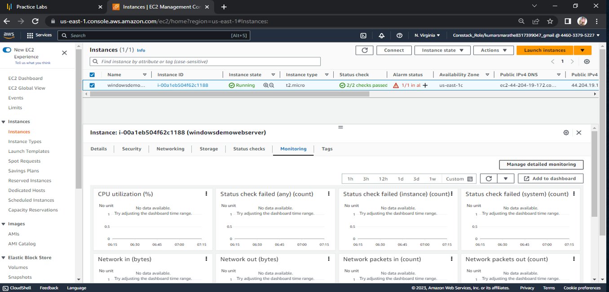
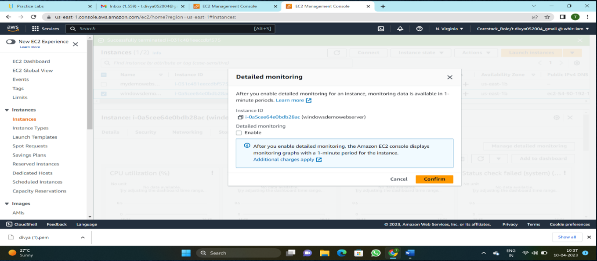

Amazon EC2 — Instance Setup
Amazon EC2 provides resizable compute in the cloud. Launch virtual servers (instances) with chosen OS, instance types, security, and networking.
Instance creation steps
- Choose an AMI (e.g., Amazon Linux 2023)
- Select instance type (e.g., t3.micro)
- Configure VPC, Subnet, Security Group (allow SSH/HTTP as needed)
- Create/Select a Key Pair for SSH
- Launch instance and verify status checks
Tip: Enable Detailed Monitoring for 1-minute metrics in CloudWatch if you need faster alarms.

